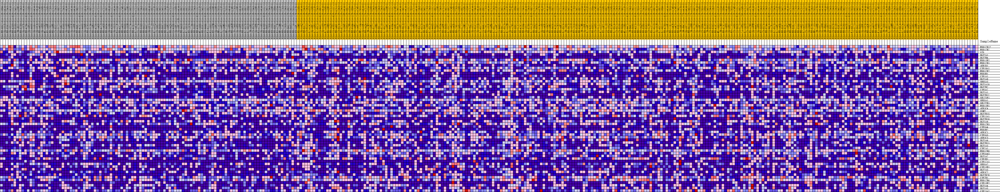
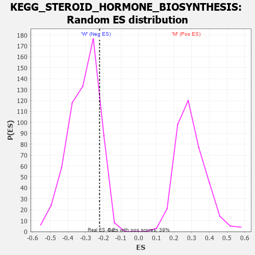

Profile of the Running ES Score & Positions of GeneSet Members on the Rank Ordered List
| Dataset | MUC16.MUC16.cls#M_versus_W.MUC16.cls#M_versus_W_repos |
| Phenotype | MUC16.cls#M_versus_W_repos |
| Upregulated in class | W |
| GeneSet | KEGG_STEROID_HORMONE_BIOSYNTHESIS |
| Enrichment Score (ES) | -0.22104563 |
| Normalized Enrichment Score (NES) | -0.71124864 |
| Nominal p-value | 0.86786294 |
| FDR q-value | 0.9886196 |
| FWER p-Value | 1.0 |
| PROBE | DESCRIPTION (from dataset) | GENE SYMBOL | GENE_TITLE | RANK IN GENE LIST | RANK METRIC SCORE | RUNNING ES | CORE ENRICHMENT | |
|---|---|---|---|---|---|---|---|---|
| 1 | HSD17B12 | na | 1069 | 0.147 | 0.0181 | No | ||
| 2 | HSD17B7 | na | 1579 | 0.129 | 0.0416 | No | ||
| 3 | STS | na | 3874 | 0.083 | 0.0213 | No | ||
| 4 | UGT2A1 | na | 4182 | 0.080 | 0.0359 | No | ||
| 5 | UGT2B4 | na | 5406 | 0.065 | 0.0303 | No | ||
| 6 | HSD11B2 | na | 5432 | 0.065 | 0.0462 | No | ||
| 7 | HSD17B1 | na | 5863 | 0.060 | 0.0538 | No | ||
| 8 | AKR1D1 | na | 6145 | 0.057 | 0.0632 | No | ||
| 9 | CYP19A1 | na | 6970 | 0.049 | 0.0608 | No | ||
| 10 | HSD17B2 | na | 7086 | 0.048 | 0.0710 | No | ||
| 11 | HSD3B1 | na | 7336 | 0.046 | 0.0782 | No | ||
| 12 | CYP1A1 | na | 7789 | 0.043 | 0.0809 | No | ||
| 13 | UGT1A8 | na | 8001 | 0.041 | 0.0875 | No | ||
| 14 | SRD5A3 | na | 8700 | 0.035 | 0.0838 | No | ||
| 15 | UGT1A10 | na | 8888 | 0.034 | 0.0890 | No | ||
| 16 | UGT2B7 | na | 8891 | 0.034 | 0.0975 | No | ||
| 17 | CYP3A7 | na | 11385 | 0.015 | 0.0562 | No | ||
| 18 | UGT1A1 | na | 12367 | 0.009 | 0.0406 | No | ||
| 19 | UGT2B17 | na | 12884 | 0.005 | 0.0326 | No | ||
| 20 | SULT1E1 | na | 15172 | -0.001 | -0.0087 | No | ||
| 21 | SRD5A1 | na | 15570 | -0.003 | -0.0152 | No | ||
| 22 | SULT2B1 | na | 16067 | -0.005 | -0.0228 | No | ||
| 23 | HSD11B1 | na | 16934 | -0.010 | -0.0359 | No | ||
| 24 | AKR1C4 | na | 17007 | -0.011 | -0.0346 | No | ||
| 25 | COMT | na | 19007 | -0.021 | -0.0656 | No | ||
| 26 | UGT2B15 | na | 21507 | -0.032 | -0.1027 | No | ||
| 27 | CYP11A1 | na | 23918 | -0.042 | -0.1357 | No | ||
| 28 | UGT2B10 | na | 25201 | -0.047 | -0.1470 | No | ||
| 29 | UGT1A9 | na | 25853 | -0.049 | -0.1463 | No | ||
| 30 | HSD17B3 | na | 26778 | -0.053 | -0.1496 | No | ||
| 31 | CYP3A4 | na | 28012 | -0.057 | -0.1574 | No | ||
| 32 | HSD3B2 | na | 29456 | -0.062 | -0.1677 | No | ||
| 33 | AKR1C1 | na | 29768 | -0.063 | -0.1573 | No | ||
| 34 | CYP3A5 | na | 31014 | -0.067 | -0.1628 | No | ||
| 35 | AKR1C3 | na | 31141 | -0.067 | -0.1480 | No | ||
| 36 | UGT1A6 | na | 31720 | -0.069 | -0.1409 | No | ||
| 37 | UGT2B11 | na | 33054 | -0.074 | -0.1463 | No | ||
| 38 | UGT1A3 | na | 34280 | -0.078 | -0.1488 | No | ||
| 39 | CYP7A1 | na | 35237 | -0.080 | -0.1457 | No | ||
| 40 | HSD17B8 | na | 35742 | -0.082 | -0.1341 | No | ||
| 41 | CYP3A43 | na | 40008 | -0.096 | -0.1871 | No | ||
| 42 | UGT1A7 | na | 41884 | -0.102 | -0.1951 | Yes | ||
| 43 | CYP1B1 | na | 43070 | -0.106 | -0.1896 | Yes | ||
| 44 | CYP17A1 | na | 43824 | -0.109 | -0.1756 | Yes | ||
| 45 | SRD5A2 | na | 44653 | -0.112 | -0.1621 | Yes | ||
| 46 | CYP11B1 | na | 45159 | -0.114 | -0.1423 | Yes | ||
| 47 | UGT2A3 | na | 46727 | -0.121 | -0.1400 | Yes | ||
| 48 | AKR1C2 | na | 46817 | -0.121 | -0.1108 | Yes | ||
| 49 | UGT2B28 | na | 48122 | -0.128 | -0.1019 | Yes | ||
| 50 | CYP7B1 | na | 48533 | -0.130 | -0.0762 | Yes | ||
| 51 | HSD17B6 | na | 49264 | -0.135 | -0.0553 | Yes | ||
| 52 | CYP11B2 | na | 49811 | -0.139 | -0.0300 | Yes | ||
| 53 | UGT1A4 | na | 50316 | -0.142 | -0.0032 | Yes | ||
| 54 | UGT1A5 | na | 50543 | -0.143 | 0.0292 | Yes | ||
| 55 | CYP21A2 | na | 54775 | -0.222 | 0.0089 | Yes |

